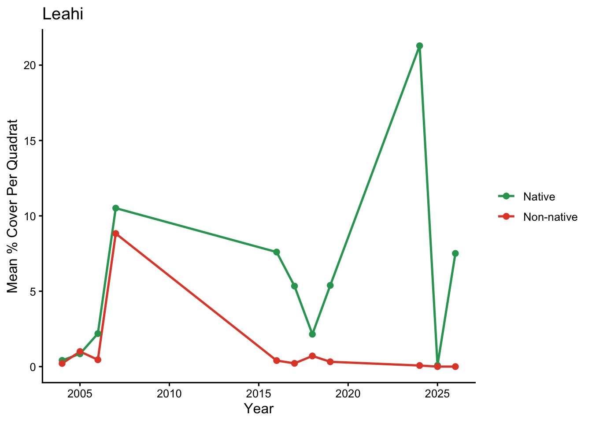
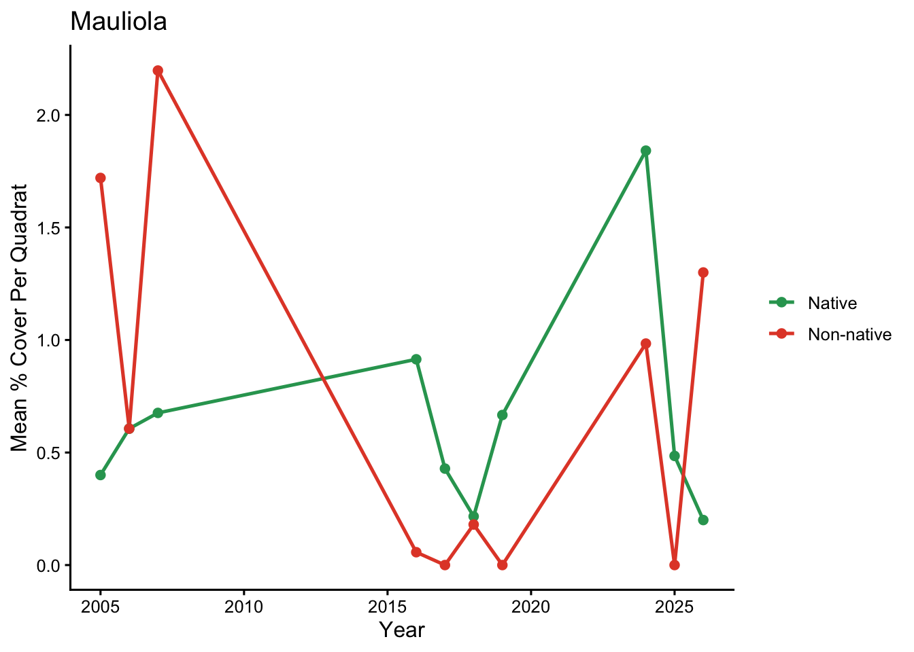

Group Questions: Species occurrence: For a selected taxon or group, where and when was it recorded? Make an occurrence or detection-frequency summary, explicitly distinguishing absence from not surveyed and accounting for sampling effort.
algae <- raw |>filter(category =="Algae", island=="Oahu") |>left_join(lookup, by ="taxon_clean") |>mutate(origin_group =case_when( origin_status %in%c("Native", "Native (likely)") ~"Native", origin_status %in%c("Non-native", "Non-native (invasive)") ~"Non-native",TRUE~"Unresolved"# cryptogenic, genus-level, turf, unknown groups ))
AI Conversations
Differentiating native algae from invasive algae. When asking AI (Claude) to clean the master sheet and create new sheets only displaying algae data, I mentioned that I planned to differentiate native and non-native limu. Claude did this on itʻs own, with itʻs own sources and created a new data sheet with the algae species organized as either “Native”, “Non-native(Invasive)”, or “Unresolved.” As seen in conversation and data below:
ME: I can first make a new data sheet that only has algae. Then I can plot and interactive map that shows where the native vs non-native algae was found around the island. Secondly, I want to make a plot showing the abundance of native vs non-native species on a time series line graph for each location. So it would be two lines and I would change out the location for each, resulting in around 8 graphs?
CLAUDE: I wrote algae_map_and_timeseries.R, which covers all three steps. I haven’t run it, since R isn’t available in my sandbox, so expect to fix a small thing or two on the first run. What the script does 1. Algae-only sheet. It writes algae_only.csv, with each record labeled Native, Non-native, or Unresolved. It also writes a companion quadrat_samples.csv listing every quadrat surveyed, including ones with no algae. Without that second file, empty quadrats disappear from an algae-only sheet and average cover comes out too high. 2. Interactive map. Each location gets a green circle for native algae and a red circle for non-native algae, sized by mean % cover. The circles are offset a few hundred meters east and west so both stay visible, and you can toggle each layer. Clicking a site shows its cover values, number of quadrats, and survey years. The map is saved as oahu_native_vs_nonnative_map.html. 3. Time series. There are two lines per location, native and non-native. plot_site(“Leahi”) draws one site, and changing the name switches locations. The script also saves a PNG for each site and one overview page with all of them.
I made a review sheet and a script that merges your decisions back, so you don’t have to edit the lookup by hand. I haven’t run the R script. How to clean it up 1. Open algae_origin_review.csv. It lists 109 taxa, with the ones that most need a decision first. The first 30 rows are the “check” taxa, such as Turbinaria ornata, Spyridia filamentosa, and Colpomenia sinuosa, followed by the 46 genus-level entries, then my 29 “likely native” and 4 non-native calls to confirm. 2. Fill in your_status using only Native, Non-native, Cryptogenic, or Unresolved. Put your source in source_or_note. Leave a row blank to keep the current status. 3. Run update_origin_lookup.R. It checks that your entries are valid, writes an updated algae_origin_lookup.csv, keeps a backup of the old one, and prints what’s still undecided. Re-run algae_map_and_timeseries.R. I updated it to accept the new labels, and the map and graphs will pick up your changes. Cryptogenic and Unresolved taxa are left off the native and non-native lines. 4. Where to look things up * UH Reefalgae field guide (hawaii.edu/reefalgae), which marks algae as alien, native, or unknown origin. * AlgaeBase, filtered to the Hawaiian Islands. * Carlton & Eldredge (2009), the Bishop Museum list of introduced and cryptogenic marine species in Hawaiʻi. * A local expert. Your organization may already have someone who can confirm the less certain taxa.
All of the algae from these data sheets were cross checked with the book Hawaiian Reef Plants as well as Algae Base.
# A tibble: 1 × 3
address lat long
<chr> <dbl> <dbl>
1 Diamond Head 21.3 -158.
Show code
geo("Ewa Beach", method ="osm")
# A tibble: 1 × 3
address lat long
<chr> <dbl> <dbl>
1 Ewa Beach 21.3 -158.
Show code
geo("Kahana Bay", method ="osm")
# A tibble: 1 × 3
address lat long
<chr> <dbl> <dbl>
1 Kahana Bay 21.6 -158.
Show code
geo("Sand Island, Hawaii", method ="osm")
# A tibble: 1 × 3
address lat long
<chr> <dbl> <dbl>
1 Sand Island, Hawaii 21.3 -158.
Show code
geo("Barbers Point, Hawaii", method ="osm")
# A tibble: 1 × 3
address lat long
<chr> <dbl> <dbl>
1 Barbers Point, Hawaii 21.3 -158.
Show code
geo("Turtle Bay, Hawaii", method ="osm")
# A tibble: 1 × 3
address lat long
<chr> <dbl> <dbl>
1 Turtle Bay, Hawaii 21.7 -158.
Show code
geo("Sandy Beach, Hawaii", method ="osm")
# A tibble: 1 × 3
address lat long
<chr> <dbl> <dbl>
1 Sandy Beach, Hawaii 21.3 -158.
Show code
geo("Maili Point, Hawaii", method ="osm")
# A tibble: 1 × 3
address lat long
<chr> <dbl> <dbl>
1 Maili Point, Hawaii 21.4 -158.
Show code
geo("Baby Makapuu, Hawaii", method ="osm")
# A tibble: 1 × 3
address lat long
<chr> <dbl> <dbl>
1 Baby Makapuu, Hawaii NA NA
Show code
oahu_sites <-tribble(~place,"Diamond Head","Ewa Beach","Kahana Bay","Sand Island, Hawaii","Barbers Point, Hawaii", "Turtle Bay, Hawaii","Sandy Beach, Hawaii","Maili Point, Hawaii","Baby Makapuu, Hawaii")oahu_geocoded <- oahu_sites |>geocode(place, method ="osm") # geocode the 'place' columnoahu_geocoded
# A tibble: 9 × 3
place lat long
<chr> <dbl> <dbl>
1 Diamond Head 21.3 -158.
2 Ewa Beach 21.3 -158.
3 Kahana Bay 21.6 -158.
4 Sand Island, Hawaii 21.3 -158.
5 Barbers Point, Hawaii 21.3 -158.
6 Turtle Bay, Hawaii 21.7 -158.
7 Sandy Beach, Hawaii 21.3 -158.
8 Maili Point, Hawaii 21.4 -158.
9 Baby Makapuu, Hawaii NA NA
Show code
leaflet(oahu_geocoded) |>addProviderTiles(providers$Esri.WorldImagery) |>addMarkers(lng =~long, lat =~lat, # tidygeocoder always returns 'lat' and 'long'label =~place) # hover to see place name
Figure 1: Oʻahu algae sampling locations.
Show code
# Every quadrat surveyed on Oahu (so quadrats with no algae count as 0)samples <- raw |>filter(sample_type =="quadrat", island =="Oahu") |>distinct(sample_id, site_name, year, lat = latitude, lon = longitude, points_possible)# Algae points per quadratalgae_pts <- raw |>filter(category =="Algae", sample_type =="quadrat") |>group_by(sample_id) |>summarise(points =sum(count, na.rm =TRUE), .groups ="drop")# Mean % cover per sitesite_algae <- samples |>left_join(algae_pts, by ="sample_id") |>mutate(cover =pmin(100*replace_na(points, 0) / points_possible, 100)) |>group_by(site_name, lat, lon) |>summarise(mean_cover =mean(cover), n_quadrats =n(), .groups ="drop")# Algae points per quadrat, split into native vs non-nativegroup_pts <- raw |>filter(category =="Algae", sample_type =="quadrat") |>left_join(lookup, by ="taxon_clean") |>mutate(origin_group =case_when( origin_status %in%c("Native", "Native (likely)") ~"Native", origin_status %in%c("Non-native", "Non-native (invasive)") ~"Non-native",TRUE~"Unresolved")) |>filter(origin_group %in%c("Native", "Non-native")) |>group_by(sample_id, origin_group) |>summarise(points =sum(count, na.rm =TRUE), .groups ="drop")quad <- samples |>crossing(origin_group =c("Native", "Non-native")) |>left_join(group_pts, by =c("sample_id", "origin_group")) |>mutate(cover =pmin(100*replace_na(points, 0) / points_possible, 100))# Site level (map circles) and site x year level (popup graphs)site_group <- quad |>group_by(site_name, lat, lon, origin_group) |>summarise(mean_cover =mean(cover), n_quadrats =n_distinct(sample_id),.groups ="drop")site_year <- quad |>group_by(site_name, year, origin_group) |>summarise(mean_cover =mean(cover), n_quadrats =n_distinct(sample_id),.groups ="drop")
Plotting % Cover of Native vs Non-Native
Show code
map_cols <-c("Native (likely)"="#2ca25f","Non-native (invasive)"="#e34a33")popup_tbl <- quad |>group_by(site_name, origin_group) |>summarise(mean_cover =mean(cover), .groups ="drop") |>pivot_wider(names_from = origin_group, values_from = mean_cover) |>rename(native_cover = Native, nonnative_cover =`Non-native`)site_info <- quad |>group_by(site_name) |>summarise(n_quadrats =n_distinct(sample_id),first_year =min(year), last_year =max(year),n_years =n_distinct(year), .groups ="drop")site_map <- site_group |>select(-n_quadrats) |># avoid the duplicate column nameleft_join(popup_tbl, by ="site_name") |>left_join(site_info, by ="site_name") |>mutate(popup =paste0("<b>", site_name, "</b><br>","Native: ", round(native_cover, 1), "% cover<br>","Non-native: ", round(nonnative_cover, 1), "% cover<br>","Quadrats: ", n_quadrats, "<br>","Survey years: ", n_years, " (", first_year, "-", last_year, ")"))native_pts <- site_map |>filter(origin_group =="Native")nonnat_pts <- site_map |>filter(origin_group =="Non-native")offset_deg <-0.0035# nudges the two circles ~400 m apart; set to 0 to stack themmax_cover <-max(site_map$mean_cover, na.rm =TRUE) # largest circle = highest cover
Figure 3: Mean percent cover of total algae across Oʻahu sampling locations.
Show code
# ---- TIME SERIES: NATIVE vs NON-NATIVE, ONE GRAPH PER SITE ------------------site_year <- quad |>group_by(site_name, year, origin_group) |>summarise(n_quadrats =n_distinct(sample_id),mean_cover =mean(cover),se =sd(cover) /sqrt(n()),.groups ="drop")# Only sites with enough survey years for a line to mean anythingmin_years <-3sites_to_plot <- site_year |>group_by(site_name) |>summarise(n_years =n_distinct(year), .groups ="drop") |>filter(n_years >= min_years) |>pull(site_name)sites_to_plot
cols <-c("Native"="#2ca25f", "Non-native"="#e34a33")## Plot function for each individual siteplot_site <-function(site) { site_year |>filter(site_name == site) |># site is the variable that changesggplot(aes(year, mean_cover, color = origin_group)) +geom_line(linewidth =0.9) +geom_point(size =2) +scale_color_manual(values = cols, name =NULL) +labs(title = site, x ="Year", y ="Mean % Cover Per Quadrat", size=NULL) +theme_classic(base_size =12)}
Show code
# View a single site (swap the name to change locations)plot_site("Leahi")

Figure 4: Percent algal cover per quadrat at Leahi sampling location from 2005 to 2025.
Show code
plot_site("Mauliola")

Figure 5: Percent algal cover per quadrat at Mauliola sampling location from 2005 to 2025.